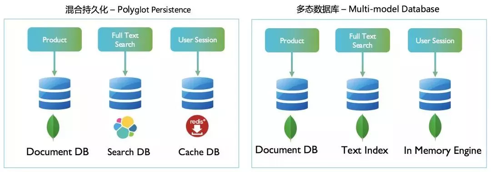
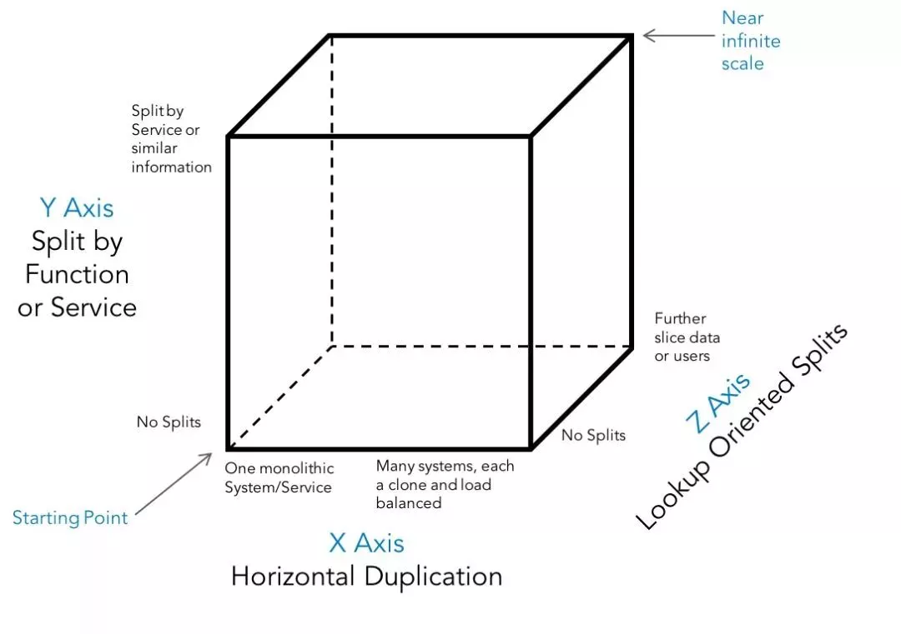

Microservices Data Architecture
Problems
- One database per service or One shared database?
- One type of database system or multiple types(SQL, NoSQL, etc.)
- Polyglot Persistence or Multi-model Database
- Scalability


MongoDB
MongoDB 是一个分布式文档型数据库，它有以下一些特性使它非常适合于微服务架构：
- 多模数据库 (Multi-model)
- 原生 JSON 数据结构 - API
- 动态模式、无模式 (Dynamic schema / Schemaless)
- 数据变化流 (Change Stream)
- 横向扩展能力 (Sharding)